Se Skapa ny uppladdning för en översikt av att skapa en ny uppladdning. Denna sektion ger en detaljerad beskrivning av varje fält som finns tillgängligt i formuläret för uppladdning:
Bidragsgivare — Lär dig lägga till personer/organisationer som inte förekommer i citeringen.
Resurstyper
Fältet för resurstyp är ett obligatoriskt fält i formuläret för uppladdning. Resurstypen används för att beskriva filernas natur och är viktig för att göra ditt inlägg sökbart.
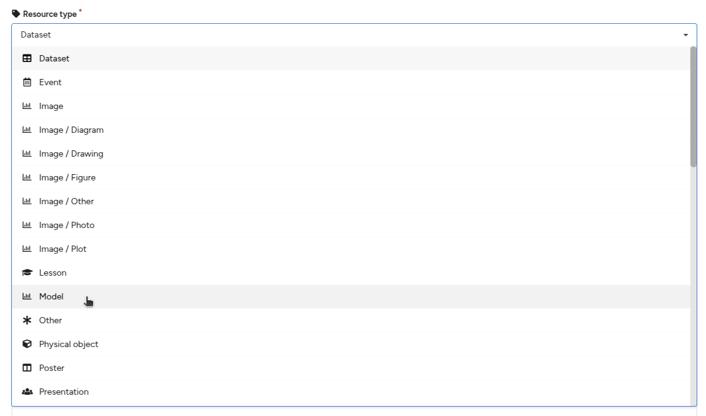
Resurstyp meny
Välja en resurstyp
Från rullgardinsmenyn för resurstyp, välj den resurstyp som bäst beskriver filerna du delar.
Den valda resurstypen är viktig för att göra din uppladdning sökbar, både för användare som vill hitta ditt forskningsresultat och eftersom olika söksystem endast indexerar exempelvis publikationer, dataset eller programvara från KTH Data Repository.
Blandade resurstyper
I vissa fall kan du vilja dela ett digitalt objekt som består av exempelvis både data och programvara eller en annan kombination av flera resurstyper. I dessa fall finns det två möjliga lösningar:
Välj en typ – Välj den resurstyp som du anser bäst beskriver och/eller är mest betydelsefull för uppladdningen. Till exempel kan datasetet vara huvudbidraget, medan programvaran endast består av några bearbetningsskript.
Dela upp uppladdningen – Dela upp uppladdningen i flera inlägg, ett per resurstyp. Använd denna metod när både datasetet och programvaran är betydande bidrag i sig själva.
Digital Object Identifier (DOI)
En Digital Object Identifier (DOI) är en globalt unik och beständig identifierare för ditt inlägg. DOI är viktig eftersom:
Den ger en permanent länk till din uppladdning så att läsare alltid kan hitta ditt innehåll på ett tillförlitligt sätt.
Den är viktig för att söksystem ska kunna hänföra citeringar korrekt.
Den möjliggör pålitlig sammanlänkning av forskningsresultat.
Den gör din forskning mer sökbar genom att indexera DOI-metadatan i ett globalt register.
Som standard registrerar KTH Data Repository DOIs för alla uppladdningar när de publiceras. Om du behöver känna till DOI:n innan publicering kan du använda metoden nedan för att reservera en DOI. Den reserverade DOI:n kan sedan inkluderas i filer (t.ex. ett textdokument) innan de laddas upp.
Reservera en DOI
I fältet Digital Object Identifier, svara "Nej" på frågan "Har du redan en DOI för denna uppladdning?"
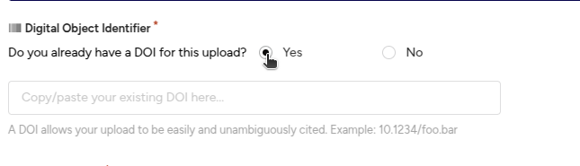
Har redan en DOI
Klicka på knappen Få en DOI nu!
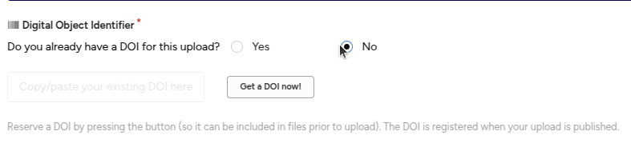
Få en ny DOI
En DOI kommer nu att reserveras för dig. Du kan inkludera denna DOI i filer innan du laddar upp dem (t.ex. i ett textdokument). Du kan också ta bort den genom att klicka på X-knappen bredvid DOI:n.
Ny DOI genererad
Om du tar bort den reserverade DOI:n kan du återfå samma reserverade DOI genom att klicka på Få DOI-knappen igen. Om du däremot raderar utkastet till uppladdningen går den reserverade DOI:n förlorad.
Använd en befintlig DOI
Om du redan har delat eller laddat upp ditt inlägg i en annan databas eller tidskrift, kan du redan ha en DOI. I så fall måste du ange den befintliga DOI:n för att förhindra att flera DOI:er registreras för samma innehåll. Observera att om du delar kompletterande data till en tidskriftsartikel, bör du inte använda tidskriftsartikelns DOI.
I fältet Digital Object Identifier, svara "Ja" på frågan "Har du redan en DOI för denna uppladdning?"
Har redan en DOI
2. Kopiera och klistra in (för att undvika skrivfel) den befintliga DOI:n i fältet. DOI:n kommer att valideras för korrekt format, och en given DOI kan endast registreras en gång i KTH Data Repository (dubbleringar upptäcks automatiskt).
Titlar
Titel-fältet är ett obligatoriskt fält i formuläret för uppladdning. Titeln är viktig för att läsare ska kunna hitta din forskning och används i citeringar samt vid visning av inlägg i lagringsplatsen.
Du kan valfritt lägga till ytterligare titlar, såsom undertitlar, översatta titlar eller alternativa titlar.
Lägg till en ytterligare titel
Klicka på knappen Lägg till titlar.
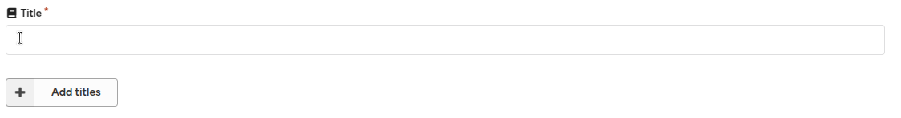
Lägg till titel textfält
Ange den ytterligare titeln och välj titeltypen (alternativ titel, undertitel, översatt titel eller annan).
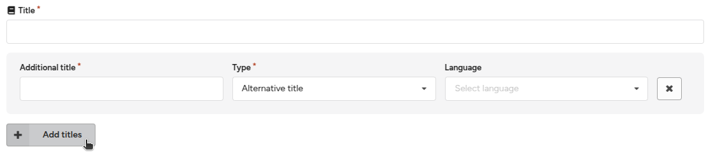
Lägg till ytterligare titel
3. Valfritt: Ange språket för den ytterligare titeln.
Publiceringsdatum
Fältet publiceringsdatum är ett obligatoriskt fält. Som standard är det inställt på det datum då utkastet skapades. Om din uppladdning tidigare publicerats någon annanstans (t.ex. som en tidskriftsartikel), använd datumet för den första publiceringen.
Observera att förutom publiceringsdatumet, håller KTH Data Repository reda på datumet då ett inlägg laddades upp till databasen.
Oprecisa datum (EDTF)
För äldre innehåll kanske du inte alltid vet det exakta publiceringsdatumet. I dessa fall kan du använda både oprecisa datum och datumintervall enligt Extended Date Time Format (EDTF) Level 1-standarden:
Minskad precision för år och månad – 2025-09 avser månaden september 2025.
Minskad precision för år – 2025 avser kalenderåret 2025.
Tidsintervall – 2025-01-01/2025-09-23 avser tidsintervallet som börjar den 1 januari 2025 och slutar den 23 september 2025.
Oprecist tidsintervall – 1939/1945 avser tidsintervallet som börjar någon gång 1939 och slutar någon gång 1945.
Skapare
Fältet skapare är ett obligatoriskt fält. Skapare är de personer eller organisationer som har skapat resursen som laddas upp (t.ex. författarna i en artikel). Skapare listas i den akademiska citeringen.
En skapare kan vara antingen en:
Person
Organisation
Se även bidragsgivare för hur du lägger till personer eller organisationer som inte ska visas i den akademiska citeringen.
Lägg till en skapare
Klicka på Lägg till skapare för att lägga till en eller flera nya skapare.
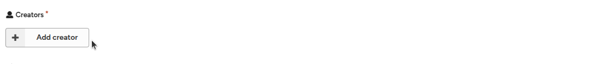
Lägg till skapare knapp
2. Välj mellan Person eller Organisation som namntyp.
- Personnamn delas upp i fält för efternamn och förnamn och kan fyllas i automatiskt.
- Organisationsnamn består av ett enda fält och kan inte fyllas i automatiskt.
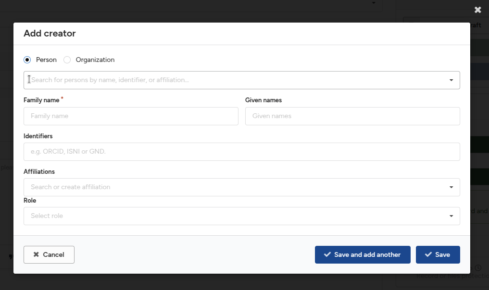
Lägg till skapare meny
3. Sök efter en redan känd person för att underlätta registreringen. Sökningen drivs av ORCID-datasetet.
Lägg till skapare autocomplete
4. Ange efternamn och förnamn. Uppdelningen är viktig för automatisk generering av citeringssträngar.
Ange namnidentifierare för personen/organisationen, såsom ORCID, ISNI, GND eller ROR. Dessa normaliseras automatiskt av formuläret.
Ange en eller flera affilieringar för skaparen. Fältet fylls i automatiskt från ROR-databasen.
Välj i första hand ett av de automatiskt ifyllda alternativen eftersom det unikt identifierar organisationen.
Om organisationen inte finns i listan kan du skriva in namnet manuellt.
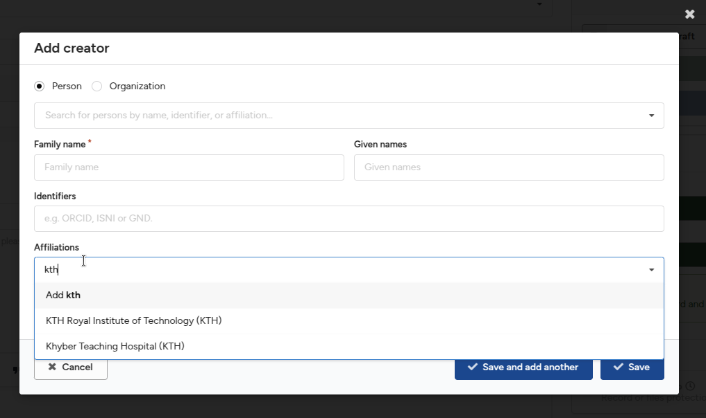
Lägg till affiliering
Valfritt: Välj en roll för skaparen (t.ex. "Redaktör").
Klicka på Spara och lägg till en till för att lägga till fler skapare, eller klicka på Spara för att återgå till huvudformuläret.
Redigera en skapare
Klicka på Redigera-knappen bredvid en skapare för att uppdatera informationen.
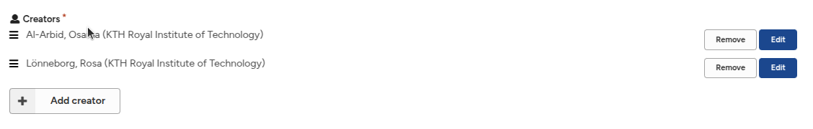
Redigera skapare
Ta bort en skapare
Klicka på Ta bort-knappen bredvid en skapare för att ta bort personen från listan.
Ta bort skapare
Ändra ordning på skapare
Klicka och håll nere dra-och-släpp-ikonen.
Dra skaparen till önskad position i listan.
Ändra ordning på skapare
Beskrivningar
Fältet beskrivning är ett rekommenderat fält. Det används vanligtvis för att ange en sammanfattning av ditt inlägg. Du kan även lägga till ytterligare beskrivningar, såsom metoder, teknisk information och anteckningar.
Lägg till en beskrivning
Ange en sammanfattning för ditt inlägg.
Du kan använda grundläggande formatering, inklusive:
Stycken
Rubriker
Fet/kursiv text
Länkar
Punktlistor
Citat
Lägg till en ytterligare beskrivning (t.ex. anteckningar, metoder)
Klicka på Lägg till beskrivning-knappen för att lägga till en ytterligare beskrivning.
Fyll i den ytterligare beskrivningen.
Du kan ta bort beskrivningen genom att klicka på ta bort-ikonen (X).
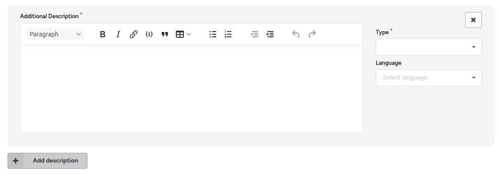
Lägg till ytterligare beskrivning meny
Välj en beskrivningstyp, och ange valfritt språk för beskrivningen.
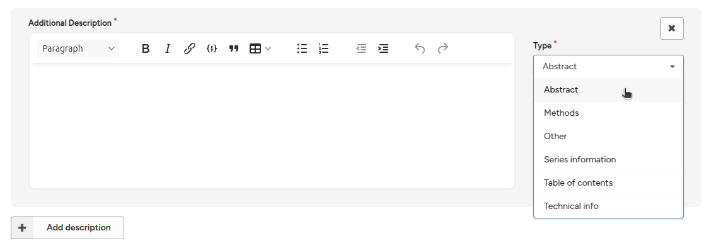
Lägg till ytterligare beskrivning typer
Licenser och rättigheter
Fältet licens är ett obligatoriskt fält. Att ange en licens för ditt inlägg är viktigt för att andra användare ska kunna återanvända din uppladdning. KTH Data Repository använder som standard licensen Creative Commons Attribution 4.0 International (CC-BY).
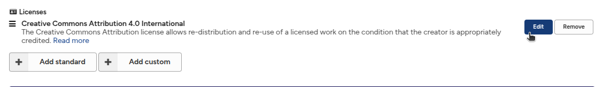
Licenser meny
Välja en licens
Vi rekommenderar följande resurser för att hjälpa dig att välja en lämplig licens:
När du har valt en licens, följ stegen nedan för att välja den i KTH Data Repository.
Ändra en standardlicens
Klicka på Redigera-knappen bredvid licensen Creative Commons Attribution 4.0 International (CC-BY).
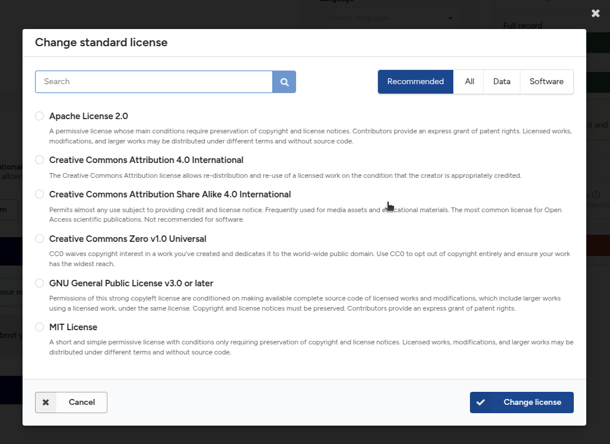
Ändra licens meny
Välj en av de rekommenderade licenserna eller sök/bläddra efter en standardlicens.
KTH Data Repository använder den välkända SPDX-listan över licenser.
Om du inte hittar din licens kan du lägga till en anpassad licens (se nästa avsnitt).
Lägg till en anpassad licens
Om du inte hittar en standardlicens kan du lägga till en anpassad licens.
Klicka på Lägg till anpassad-knappen.
Ange titeln på licensen och valfritt en beskrivning samt en länk till licensen.
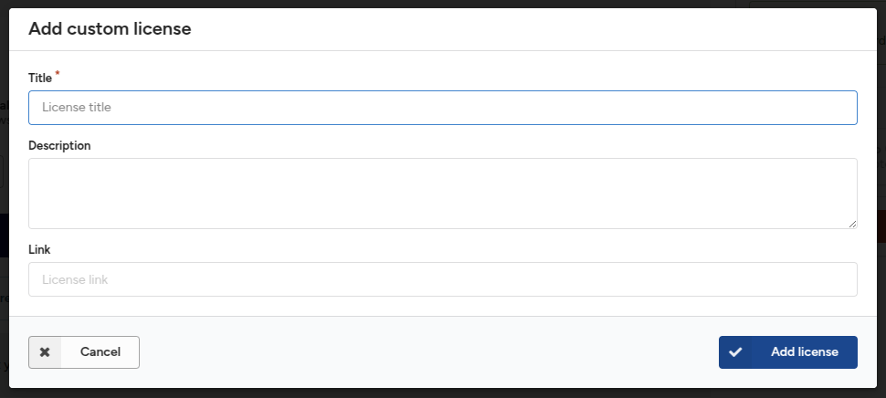
Anpassad licens meny
Blandade licenser i en uppladdning
Du kan behöva ladda upp filer som omfattas av olika licenser (t.ex. programvara under MIT-licensen och dokumentation under CC-BY-licensen). I sådana fall kan du deklarera alla relevanta licenser i systemet.
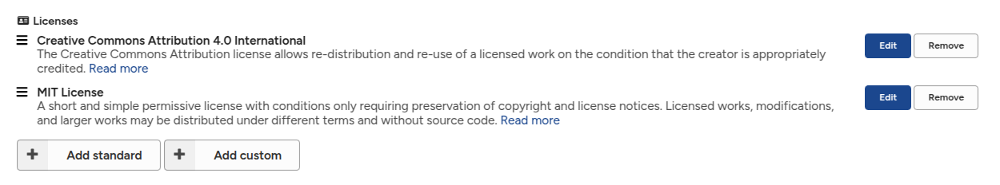
Blandade licenser
Bidragsgivare
Fältet bidragsgivare är ett rekommenderat fält. Använd detta fält för att ange personer eller organisationer som har bidragit till inlägget, såsom handledare, kontaktpersoner, sponsorer, etc. Bidragsgivare inkluderas inte i den akademiska citeringen.
Skapare vs. Bidragsgivare
Den huvudsakliga skillnaden mellan skapare och bidragsgivare sammanfattas i tabellen nedan:
Ingår i citering
Roll krävs
Skapare
Ja
Nej
Bidragsgivare
Nej
Ja
Du bör välja var du ska lägga till en person eller organisation beroende på om de ska visas i den akademiska citeringen eller inte.
Lägg till en bidragsgivare
Klicka på Lägg till bidragsgivare-knappen för att lägga till en eller flera bidragsgivare.
Fyll i bidragsgivarens information på samma sätt som för skapare (se Skapare-dokumentation).